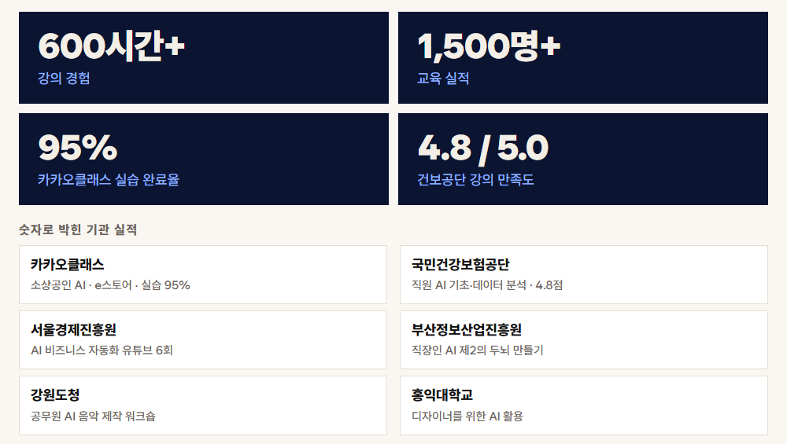
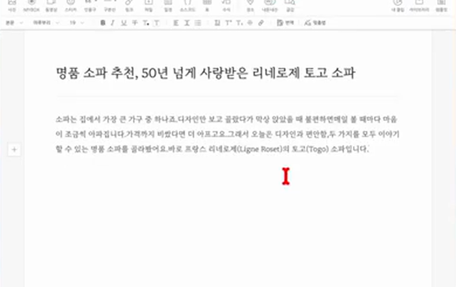
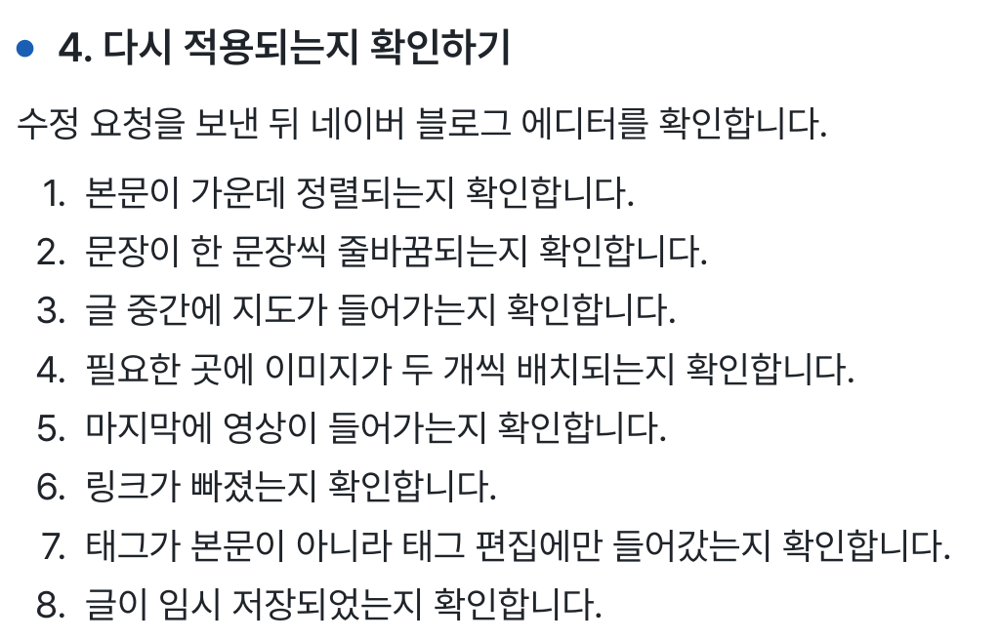

ASIDE × NAVER BLOG
글은 AI가 썼는데
붙여 넣는 건 아직 나인가요?
붙여 넣는 건 아직 나인가요?
에디터까지
맡겨보세요
조사부터 에디터 입력까지.
화면을 움직이는 AI에게 일을 맡기는 실습서.

ASIDE로 블로그 자동화 하는 법
이 책을 쓴 사람
AI를 가르쳐 온 경험을
실습 안내에 담았습니다

나민수
이 책 지은이
AIXLIFE 대표
AIXLIFE 대표
600시간+강의 경험
1,500명+교육 실적

AIXLIFE 교육 실적 · 공개사이트 자체 집계
2026.09.10 수집 자료
매번 남는 손작업
🤔사진 넣고, 정렬하고,
태그까지 채우려면?
글의 내용과 함께
화면에서 할 일도 지시해 보세요.
실제 책 속 화면
내가 보던 브라우저를
AI가 직접 움직입니다
● ● ● BOOK PREVIEW

원문 라이브 화면 · 로그인된 브라우저 조작
ASIDE로 화면을 보고 조작하는 흐름을
책 속 실습 화면과 함께 따라갑니다.
01 · 지시
완성된 모양까지
말해 주세요
블로그 글 하나 써 줘.
제목 · 사진 · 정렬
빠짐없이 적기
빠짐없이 적기
블로그 작업 지시문
- 무엇을 쓸지
- 주제와 참고 자료를 전달합니다.
- 어떤 모양으로
- 제목, 줄바꿈, 이미지, 정렬 조건을 적습니다.
- 어디서 멈출지
- 발행 전 임시 저장 단계에서 멈추도록 요청합니다.
● ● ● BOOK PREVIEW

원문 에디터 화면 · 입력 결과를 확인하는 단계
02 · 멈추는 지점
📝마지막 클릭은
직접 확인한 뒤에
AI가 끝났다고 말해도
화면에 원하는 결과가 남았는지 확인합니다.
임시 저장 → 눈으로 검수
본문, 이미지, 서식, 태그를 확인하고
빠진 부분만 다시 요청하세요.

03 · 다시 요청
처음부터 다시?
틀린 곳을 콕 집어서.
재작업 요청 예시
- 문제
- 제목과 본문이 같은 크기로 들어갔어요.
- 수정할 곳
- 제목만 크게 바꾸고 본문 정렬을 확인해 주세요.
- 확인할 결과
- 수정한 화면을 확인한 뒤 임시 저장에서 멈춰 주세요.
누락된 조건과 바꿀 위치를 적으면
같은 설명을 반복하는 일을 줄일 수 있어요.
AIMAX · 메이크패밀리
만든 곳의 운영 기록
실제 사업을 운영해 온
경험이 있습니다
(주)메이크프렌즈 연도별 매출
2021–2023 · 월별 매출 원장 합산
출처: (주)메이크프렌즈 월별 매출 원장
연도별 합계를 소수 첫째 자리로 표시
연도별 합계를 소수 첫째 자리로 표시
함께 공부하는 공간도
운영하고 있습니다
메이크패밀리 네이버 카페
12,127명

2026.09.10 카페정보 화면 기준
출처: 네이버 카페 westudyssat
출처: 네이버 카페 westudyssat
메이크패밀리 라운지
2,885명

2026.09.10 라운지 공개 화면에 표시된 인원
출처: 메이크패밀리 라운지 첫 화면
출처: 메이크패밀리 라운지 첫 화면
준비부터 재작업까지
한 번의 흐름으로
1
ASIDE와 AI 계정 준비연결 가능 여부와 사용 한도 확인
2
블로그 글 한 편 지시조사 · 초안 · 에디터 입력
3
화면을 보고 검수서식과 태그, 저장 상태 확인
4
빠진 곳 다시 요청문제 위치와 원하는 결과를 구체적으로
이런 분께 맞아요
AI가 써 준 글을 에디터로 옮기는 일이 반복되는 분.
완료 보고와 실제 화면이 달라 당황했던 분.
시작 전에 확인하세요
알아서 발행까지 해 주나요?
이 책은 임시 저장 후 사람이 확인하는 흐름을 안내합니다. 자동 발행이나 계정 안전을 보장하지 않습니다.
같은 화면이 그대로 나오나요?
ASIDE와 연결 서비스의 화면, 사용 한도는 바뀔 수 있습니다. 책 속 화면과 다르면 현재 사용 환경을 확인해 주세요.
무엇을 받나요?
ASIDE로 블로그 작업을 지시하고 확인하는 PDF 전자책입니다. ASIDE 이용권이나 별도 AI 서비스 구독은 포함하지 않습니다.
지금 내 일에 적용해 보세요
블로그 작업을
끝까지 지시하는 법
30,000원
주문 이메일로 PDF를 받고
같은 이메일로 라운지에서 다시 꺼내보세요.
PDF 전자책입니다. 원문 라이브 화면은 책의 내용을 설명하기 위해 사용했으며 구매자의 사용 성과가 아닙니다. 나민수 지음. 프로그램 화면과 서비스 이용 조건은 변경될 수 있습니다.